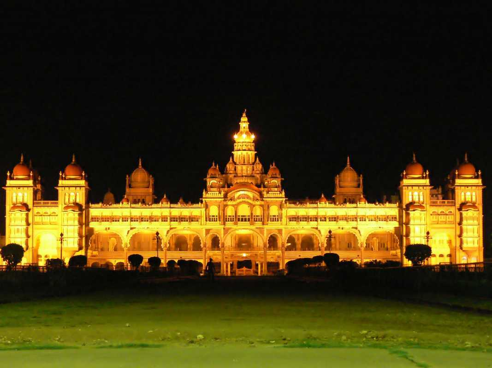
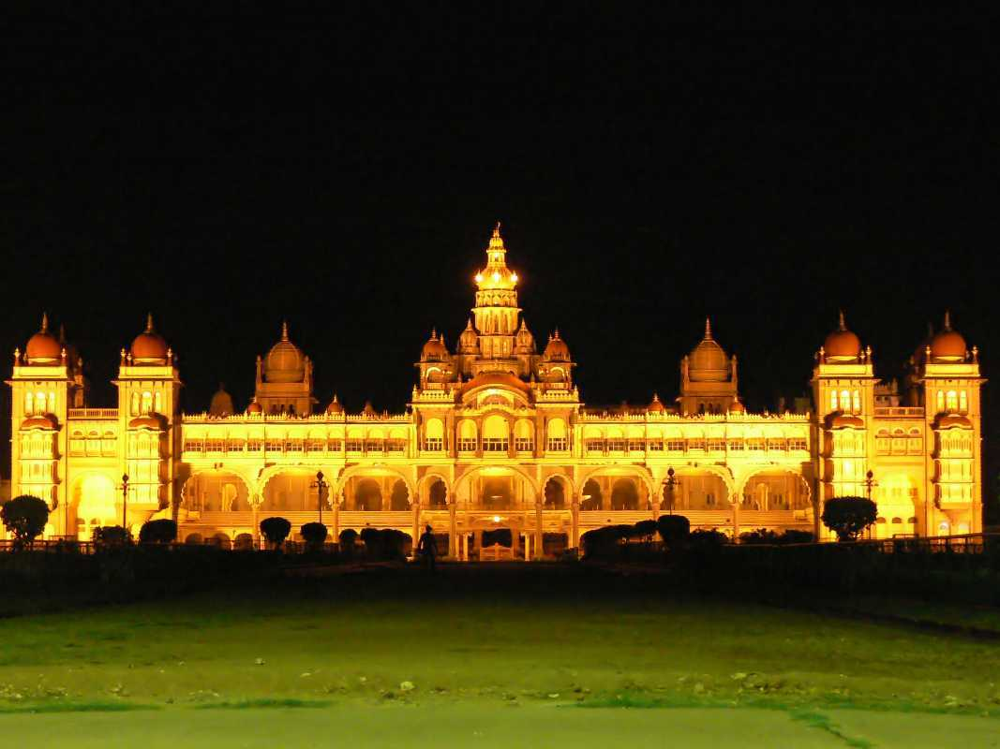

==>Meenakshi Amman Temple, Madurai.
==>Ambur Dum Biriyani from Vellore.
==>Kanchipuram for the Silks.
==>Chettinad Cuisine from Karaikudi.
==>Sunrise in Kanyakumari.
==>A stroll at Marina Beach.
==>The dolls and paintings in Thanjavur.
==>Pamban Bridge in Rameshwaram.
==>The Taj Mahal, Agra.
==>The Holy City of Varanasi.
==>Harmandir Sahib: The Golden Temple of Amritsar.
==>The Golden City: Jaisalmer.
==>The Red Fort, New Delhi.
==>Mumbai: The Gateway of India.
==>Mecca Masjid, Hyderabad.
==>Amer Fort, Jaipur.


 
